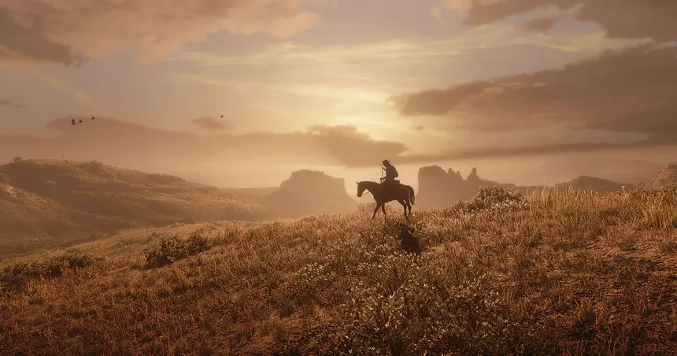
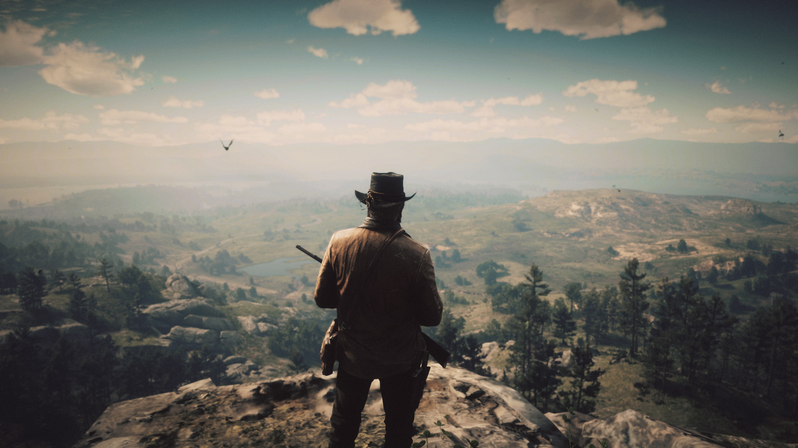
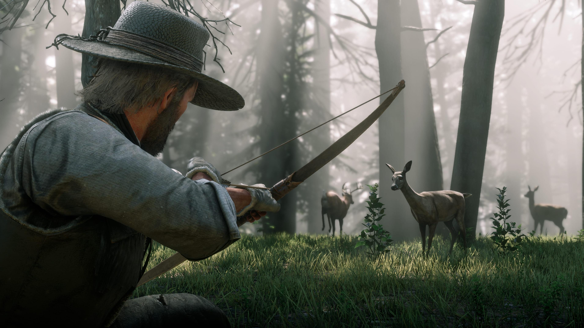
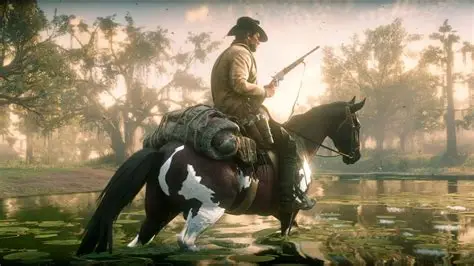
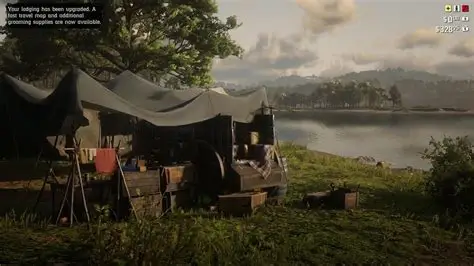
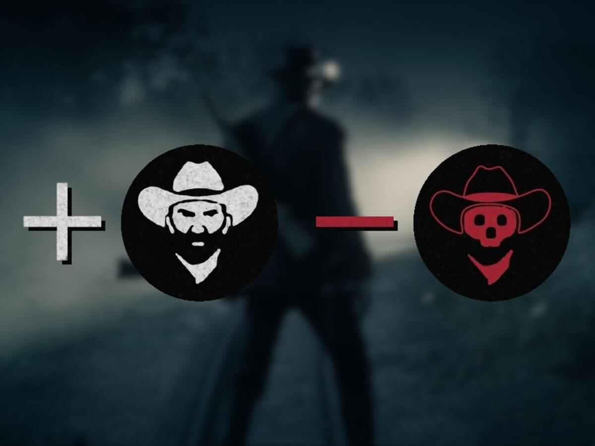
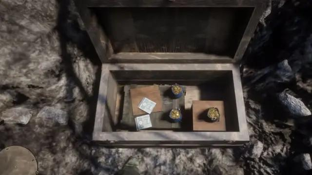
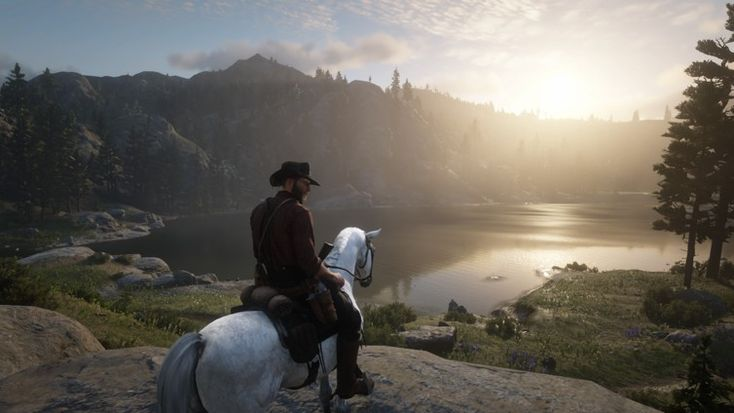

Guía de supervivencia de Red Dead Redemption 2: cómo sobrevivir en el Salvaje Oeste
Red Dead Redemption 2 es un videojuego con un mundo enorme y lleno de posibilidades. Sin embargo, algunas de sus mecánicas pueden resultar complicadas para los jugadores que están empezando su aventura.
Por eso, en esta guía aprenderemos algunos consejos, trucos y mecánicas que nos ayudarán a sobrevivir en el Salvaje Oeste y a disfrutar todavía más de nuestra aventura junto a Arthur Morgan.

Cuida de Arthur
En Red Dead Redemption 2 no basta con preocuparse por las misiones. También tendremos que mantener a Arthur en buenas condiciones físicas.
Salud, resistencia y Dead Eye
Explica cómo funcionan estos tres atributos, cómo recuperarlos y qué objetos podemos utilizar para mantenerlos al máximo.
Alimentación y descanso
Cuenta por qué es importante comer, dormir y mantener una buena alimentación durante nuestra aventura.

La caza y los animales
La caza es una de las actividades más importantes del juego. Gracias a ella podemos conseguir comida, dinero y materiales para fabricar diferentes objetos.
Cómo conseguir pieles perfectas
Explica cómo identificar la calidad de los animales, qué armas utilizar y cómo conseguir pieles perfectas.
Animales legendarios
Añade información sobre los animales legendarios, dónde encontrarlos y qué recompensas podemos obtener.

Los caballos
Nuestro caballo será uno de nuestros compañeros más importantes durante la aventura. Nos permitirá desplazarnos, transportar objetos y escapar de situaciones peligrosas.
Cómo conseguir buenos caballos
Explica las diferentes razas, sus características y cuáles son las mejores opciones para cada jugador.
Cómo mejorar el vínculo con tu caballo
Cuenta cómo alimentar, cepillar y cuidar a nuestro caballo para mejorar la relación con él.

El campamento de la banda
El campamento es el hogar de la banda de Dutch durante gran parte de la historia. Aquí podremos descansar, interactuar con otros personajes y conseguir diferentes mejoras.
Cómo mejorar el campamento
Explica cómo conseguir suministros, aportar dinero y desbloquear mejoras para las instalaciones.

El sistema de honor
Las decisiones que tomemos durante nuestra aventura tendrán consecuencias en la reputación de Arthur. El sistema de honor refleja si nuestro protagonista se comporta como un hombre honorable o como un auténtico forajido.
Cómo aumentar o reducir el honor
Explica qué acciones aumentan o disminuyen nuestro honor y cómo influye en determinados aspectos de la historia.

Cómo conseguir dinero
El dinero nos permitirá comprar armas, provisiones, ropa y otros objetos necesarios para nuestra aventura. Por suerte, existen diferentes maneras de conseguirlo.
Los mejores métodos para ganar dinero
- Encontrar tesoros y lingotes de oro.
- Cazar animales y vender sus materiales.
- Completar misiones y recompensas.
- Explorar escondites y lugares abandonados.

Consejos para principiantes
Si acabas de empezar tu aventura en Red Dead Redemption 2, estos consejos pueden ayudarte a disfrutar mucho más del juego:
- Lleva siempre provisiones y medicamentos.
- Cuida de tu caballo y mantén un vínculo elevado.
- Prepara tus armas antes de comenzar una misión.
- Explora el mapa y descubre lugares secretos.
- No tengas prisa por completar la historia.
- Presta atención a los personajes y sus conversaciones.
